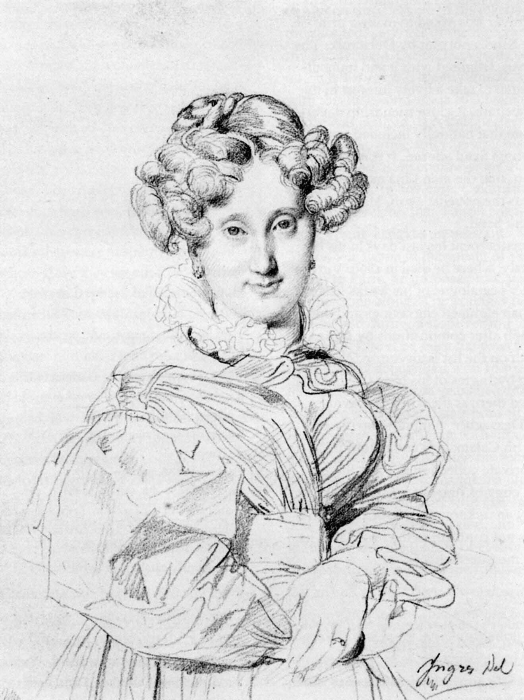
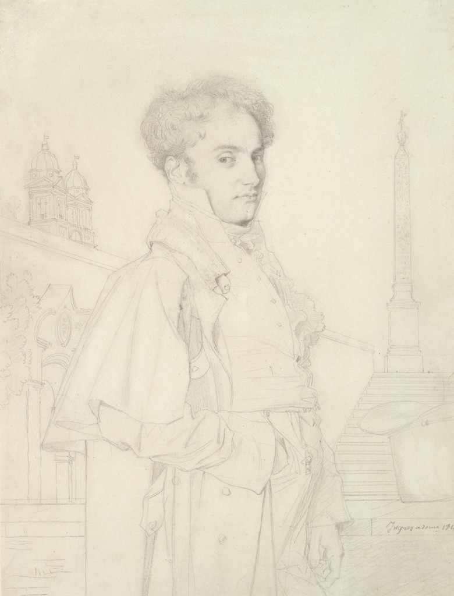

http://bit.ly/FS51x_overview
Changing perspectives
the science of optics in the visual arts


Jean-Auguste-Dominique Ingres
Portrait of Madame Godinot , 1839

Jean-Auguste-Dominique Ingres
Portrait of Augustine Modeste Hortense Reisert , 1846

Jean-Auguste-Dominique Ingres
Portrait of Etienne-Jean Delécluze , 1856

Jean-Auguste-Dominique Ingres
Portrait of Count Adolphe de Colombet de Landos , 1812
David Hockney
Marc Lancaster , 1971

David Hockney and a Camera Lucida

David Hockney
Camera Lucida Drawing of Martin Kemp


Van Eyck
Arnolfini Portrait , 1434

Van Eyck
Arnolfini Portrait , 1434


David Stork, `Optics and Realism in Renaissance Art', 2004

Hans Holbein the Younger
The Ambassadors , 1533

Hans Holbein the Younger
The Ambassadors , 1533

Johannes Vermeer
Lady Standing at a Virginal , 1670-1672

Johannes Vermeer
The Music Lesson , 1660


Johannes Vermeer
The Concert , 1665


Johannes Vermeer
The Soldier and Laughing Girl , 1665


Johannes Vermeer
The Astronomer , 1665

The Camera Obscura


The Varley Graphic Telescope

The Varley Graphic Telescope

Aravi Samuel
Eliot Samuel , 2021

Johannes Vermeer
Girl with a Pearl Earring , 1665

Johannes Vermeer
Girl with a Pearl Earring , 1665

Egbert Van der Poel
View of Delft , 1654

Johannes Vermeer, View of Delft , 1665

Chris Stokes
Rowland Institute at Harvard

Jade Ho
McGill and Harvard

Dionne Clarke
Harvard
Bart Cornelis, National Gallery in London
Clare Bryan, Victoria and Albert Museum, London
Catriona Gourlay, Victoria and Albert Museum, London
Bevil Conway, NIH
Martin Kemp, Oxford University
Abe Morrell, Artist
Dan Jay, Tufts
Ethan Murrow, Tufts
Philip Steadman, UCL
Tim Jenison, Lightwave 3D
Arthur Wheelock, National Gallery in Washington
Sandra Verdel, Mauritshuis
David Stork, Scientist
Abbie Vandivere, Mauritshuis
Michelle Luo, Google Arts and Culture
Meg Grasselli, Harvard Art Museums
Joachim Homann, Harvard Art Museums
Marge Livingston, Harvard Medical School
Sarah Schechner, Harvard Collection of Scientific Instruments